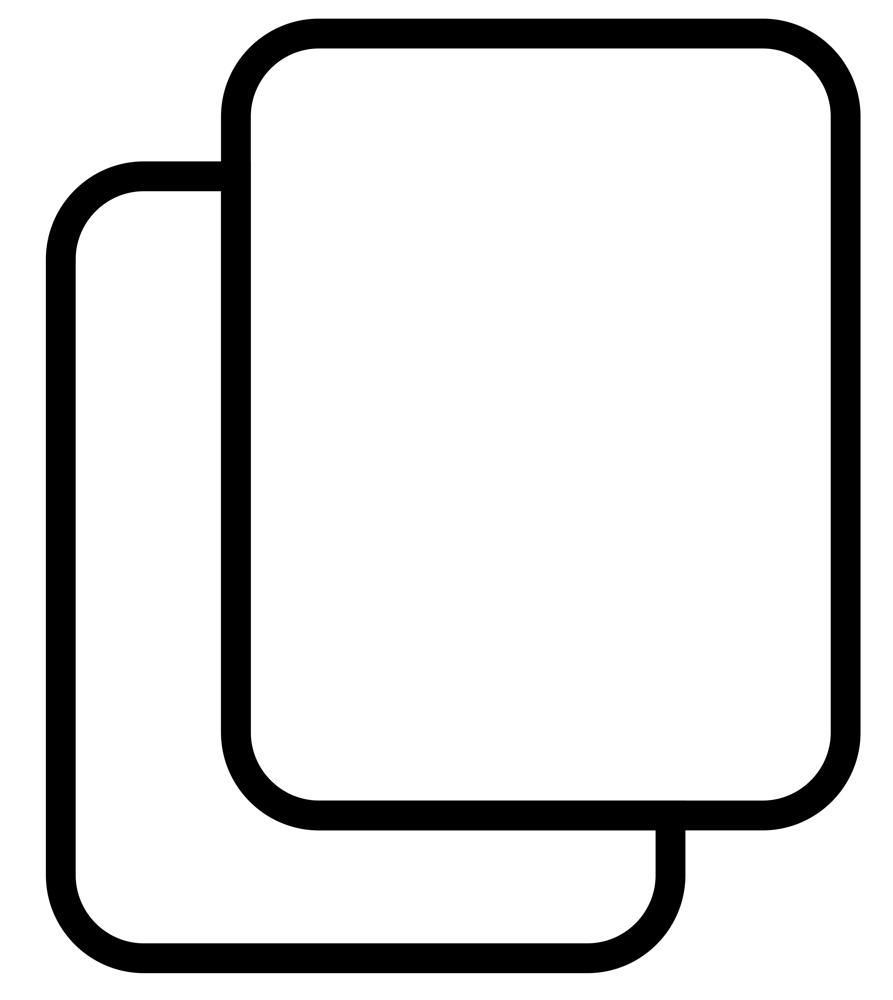

This project seeks to promote computational thinking and a sense of belonging in computer science through a culturally relevant robotics program (CRR Program) developed through a research-practice-partnership with university teacher educators
and researchers, administrators, teachers, coaches, and Black and Latinx children and their families.

What is Research-Practice Partnership?
A research-practice partnership (RPP) situates research and development in real educational contexts, focuses on design and testing of interventions, involves multiple iterations, fosters collaborative partnerships among researchers and
practitioners, and impacts practice.
The Big So What?
Opportunities for jobs in computer science and information technology are projected to grow much faster than other occupations. These jobs will be across many industries (technology, health care, agriculture, defense, government, energy,
etc.) and will be highly paid in addition to having a high impact on society. Therefore, there is a need to increase workforce diversity in order ensure that a wide range of voices are present and to help in reducing racial and gender
income inequality.
However, there currently is a significant lack of diversity in the computer science field. Only about 15% of computer science majors are women (lower than many other engineering fields). Urban schools are much
less likely to offer computer science in high school as compared to suburban schools. Only 9 states in the U.S. had more than 10 Black women pass the computer science AP exam. Sense of belonging in the field starts at an early age,
thus it is important to begin introducing computational thinking and computer science in early childhood.

Harper, F. K., Caudle, L., Quinn, M. (2022). Culturally relevant robotics: A family and teacher (CRRAFT) partnership for computational thinking in early childhood.